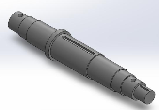
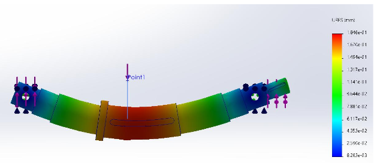
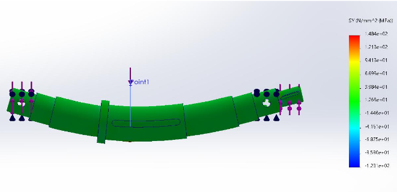
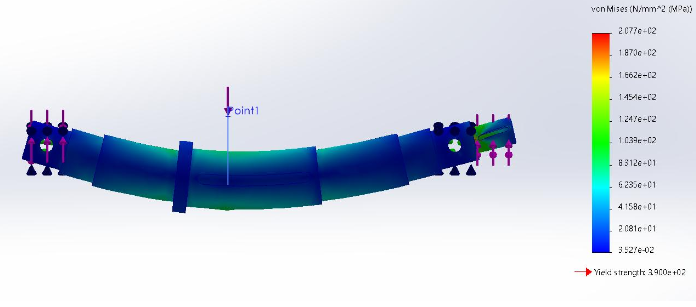
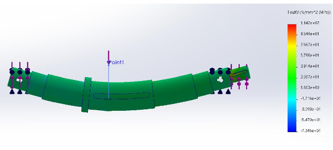
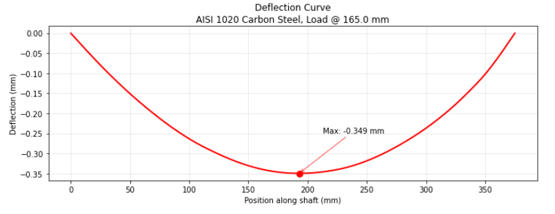
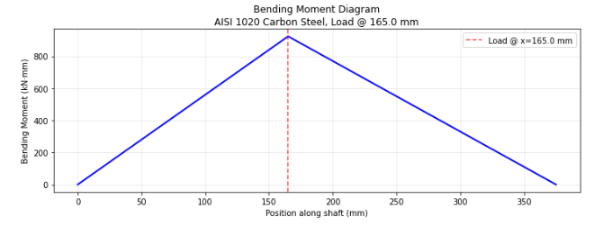
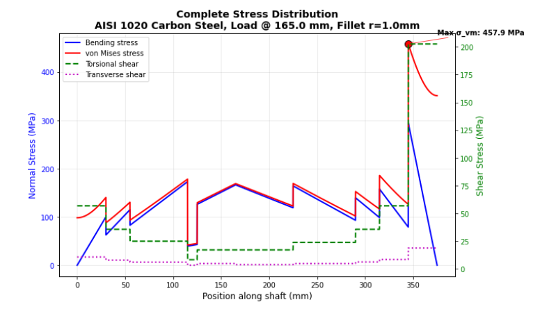

2025 · ANSYS · FEA · MECHANICAL DESIGN
Exploring Discontinuity Effects on Mechanical Design
Finite element analysis project investigating how geometric discontinuities influence stress and structural behavior in mechanical components.

Overview
We were instructed to do Stiffness, strength and fatigue analysis using python code and by hand. Then use SolidWorks to do FEA analysis on a stepped shaft with 2 different materials: AISI 1020 Cold-Drawn Carbon stell and AISI 4140 Q&T Alloy Steel. We were then supposed to propose any changes on the step shaft section lengths or diameters to match the requirements perfectly. For this project, we also wrote report on failed scenarios related to the stepped shaft. As well as writing summaries on two different research articles regarding Material analysis.
Model Development
A mechanical component was modeled and prepared for finite element analysis.
Finite Element Analysis
SolidWorks was used to simulate the component under applied loading and investigate the resulting stress distribution.




Results
The results demonstrated how changes in geometry can affect stress concentrations and mechanical performance.


